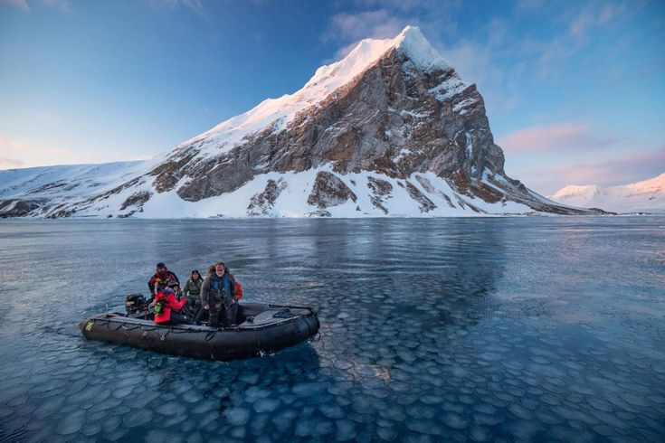

True North Travels
Discover the Soul of Scandinavia
Imagine a place where lush meadows give way to rugged cliffs carved by glaciers. Where the sun never sets in summer, and in winter the sky erupts in the dance of the Northern Lights. Welcome to Scandinavia — a land where nature is queen, and culture is deep, simple, and shaped by centuries of tradition, like the fjords themselves. True North Travels is your key to this world. We don’t just organize trips — we help you feel the true heartbeat of the North.
Find Your True North
True North Travels was born from a passion for the raw, pure and breathtaking nature of Scandinavia.
We know every mountain trail, every bend of every fjord; we are friends with local fishermen and artisans and know exactly in which hotel you will be served the most fragrant cardamom coffee in the morning.
Our philosophy is simple: we want to show you authentic, real Scandinavia — not the postcard version created for tourists.
We believe that travel is not a checklist of attractions but a deep, personal experience that can change the way you see the world.
From the stirring silence of the Arctic to the candlelit coziness of a Copenhagen café — we create journeys that become part of your personal story.
Why Travelers Choose Us 🧭
Deep Local Knowledge
Our guides are not just tour leaders. They are historians, biologists, artists, and storytellers — people whose lives are deeply intertwined with their land, driven by a genuine passion to share its soul. They will be your key to unlocking the authentic essence of every place, taking you far beyond the standard itinerary. You'll discover hidden spots known only to locals: secret mountain viewpoints untouched by crowds, small family farms producing the world's best cheese from generations-old recipes, and cozy, dimly lit bookshops that perfectly embody the local spirit of "hygge" or "dolce far niente."
They listen to the landscape and help you understand its silent language—from interpreting the tracks of wild animals to explaining the stories woven into ancient stone walls. Your journey with them becomes a living dialogue, meaningful connections and memories that feel uniquely yours.

Authentic Experiences, Not Standard Tours
We offer what you cannot buy in a standard travel package. A night in a floating cabin on a remote lake, a hands-on workshop where you bake traditional Norwegian “lefse”, a kayak ride under the midnight sun, or a reindeer safari with a Sámi herder. These are the moments that stay with you forever.
Responsible & Sustainable Tourism
We understand how fragile the nature we love truly is. This is why we work only with partners who share our ecological values: hotels with recycling systems, guides who leave no trace, and local communities. A part of every tour cost goes toward supporting Scandinavian wildlife conservation projects.